|  |
| |
 APPENDIX
APPENDIX
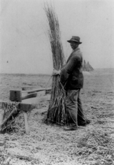
Breaking hemp c. 1920, courtesy of Kentucky Hemp Growers Association and The Hempstead Co.
This moving portrait of turn-of-the-Century life in rural Kentucky reads like an inspirational tribute to the Earth herself. We hope you will enjoy the first chapter reprinted on the following pages.
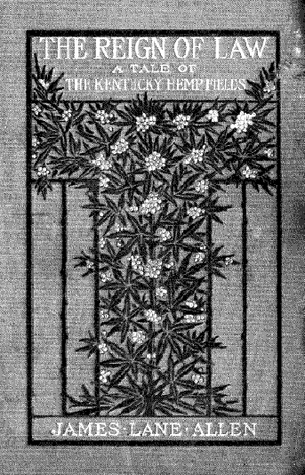
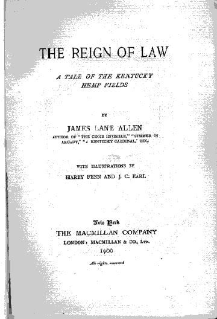
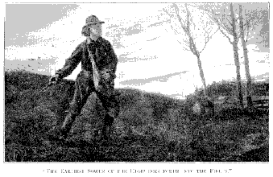
Recently, it was discovered that the original decorticator, the machine that was touted as a new invention in the 1938 Popular Mechanics “Billion Dollar Crop” article, was actually invented much earlier by one George W. Schlichten, a German immigrant. Letters dating from 1917 between E.W. Scripps, the newspaper magnate, H.H. Timken, a prominent industrialist, and their associates reveal that hemp pulp, decorticated by Schlichten, was nearly used to make news paper in 1917. The story is told on page 13, and the letters are reproduced here, with significant passages highlighted.
The first letter, dated March 26, 1917, is written to Scripps from his long-time associate Milton McRae. It introduced Timken, revealing him to be a “radical progressive” with a million dollars invested in Imperial Valley, California. McRae sets up a meeting among the three men to take place at Miramar, Scripps’ home in San Diego.
Milton A. McRae to E.W. Scripps—Mar 26, 1917
Mr. Baker has telephoned me that you have recovered sufficiently to meet Mr. Timken Wednesday morning.
He has a million dollars invested in the Imperial Valley and is almost daffy on the subject of the future of the Imperial Valley. He thinks he has purchased the rights of a machine that will produce a certain kind of fiber from cotton. The only trouble with Harry is that he is slightly deaf and he has too much money. He once told me last year that his trouble was to find a ready investment for the money he has been making so rapidly during recent years.
Last year at his house I dined with Governor Johnson and his wife. While Timken supported Hughes, up to the last campaign he has been a radical Progressive Republican.
By May of that year, Scripps had moved to Washington, D.C. to oversee his papers’ coverage of WWI. Timken travelled to Washington and discussed his discovery—the decorticator—with Scripps and then-Secretary of the Interior Franklin K. Lane. Scripps asked McRae to inquire about the possibility of using the decorticator in paper manufacturing.
McRae’s initial inquiries included a telephone conversation with C.O. Bullis, Timken’s partner in his Imperial Valley ranch. The two discussed an article that had appeared in the Los Angeles Tribune about extracting fiber from yucca plants. The focus soon turned from yucca to the hemp grown on Timken’s ranch.
McRae to Scripps—May 23, 1917
Harry Timken told me also that his cotton machine absolutely captured Secretary Lane in Washington and others, and that the Government is willing to spend a lot of money to develop it, believing the machine to be a wonderful invention.
McRae to Scripps - July 14, 1917
I have just received your letter of July 7th, in which you refer to Harry Timken and his machine with regard to paper manufacturing. Will make inquiries and write you about it in a day or two.
McRae began “giving the matter considerable thought and attention.” He discovered that the inventor of the decorticator, George W. Schlichten, had been “studying for 18 years the hemp and paper pulp proposition” and that the U.S. government had been “expending large sums of money endeavoring to find a substitute for pulp wood to manufacture paper from.” He predicted Timken’s invention would “not only render great service to his country, but it will be very profitable financially to him.”
McRae to Scripps - July 19, 1917
I note that Harry Timken called on you at Washington, and what you say concerning the possibility of using his Decorticating machine to produce fibre from the Yucca Plant.
I have been giving the matter considerable thought and attention; but I find that Mr. George W. Schlichten, the German inventor of the machine, who resides at the Maryland Hotel in San Diego, is still in the East with Mr. Timken.
From inquiries I have made, I find that Schlichten has been studying for eighteen years the hemp and paper pulp proposition; and has actually manufactured a kind of paper with pulp made with his machine.
You of course know that the United States Government, through the Agricultural Department, has been expending large sums of money endeavoring to find a substitute for pulp wood to manufacture paper from. I am told that Schlichten, the inventor, is pregnant with information on this subject; and after interviewing him, I will be glad to write you fully regarding the matter.
From what I learn, I believe that Timken has a great invention in his machine, and will not only render great service to his country, but it will be very profitable financially to him. There are two machines as I suppose you know, completed and in use. Both were made in San Diego.
In July, Timken wrote to Scripps that his hemp would soon be ready to harvest, and urged both Scripps and McRae to arrange a meeting with Schlichten. McRae reached the inventor at Timken’s ranch, and Schlichten agreed to set up a meeting upon his return to San Diego.
H.H. Timken to E.W. Scripps—July 19, 1917
…By the way, the hemp growing on my ranch in Imperial Valley is going to be cut in about two weeks. We have had applications from two or three paper concerns for sample hurds, with a view to investigating the feasibility of using those hurds for paper making. It seems to me that it might be a good business for you and Mr. McRae to make a serious investigation of this subject. Mr. Schlichten, the inventor of the Decorticating Machine, has just returned to California. He knows a good deal about paper making, and I have no doubt could explain this matter to your experts in a pretty satisfactory way. If you are interested in the subject, will you kindly put me in touch with the proper man in your organization. If Mr. McRae is back in California I would like to know it as I would like to have him meet Mr. Schlichten and talk this subject over with him.
Timken to McRae - July 23, 1917
I have your letter of July 19th. I had the pleasure of seeing Mr. Scripps in Washington a couple of weeks ago and had a very interesting visit with him. During this visit I told him something about the Decorticating Machine and the possibility of using the cotton stock and hemp hurds for paper making. He said he would get in touch with you on the subject.
Mr. Schlichten expects to reach San Diego in a day or two now and I wish you would see him and discuss with him the subject just above referred to.
Personally I believe that these hurds may be very valuable in making newspaper. We anticipate going ahead in the manufacture of these machines on a pretty large scale, and therefore there will be a large tonnage of hurds produced. If these hurds can practically be used for news printing you are the very people whom I would first like to see experiment on the project, especially as you are personally right there on the ground.
McRae agreed with Scripps’ suggestion to assign newspaper manager Ed Chase to the project, noting, “It may be, as you say, a big thing.” McRae compared his opportunity to invest in the decorticator to his earlier involvement with the tractor, writing “both machines may revolutionize existing conditions.”
McRae to Scripps - August 1, 1917
…I have arranged with Ed Chase to make a thorough investigation of this matter. I am to have Ed Chase with me when I have my conference with Schlichten, and I feel certain that I will ascertain definitely within a reasonable time what the possibilities are. It may be, as you say, a big thing.
On my way home from Miramar with Timken a few months ago, he talked with me about interesting me in his Decorticating Machine.
Was this not a strange coincidence for two Detroit manufacturers wanting me to go into business with them, and both machines may revolutionize existing conditions.
Will write you regarding this matter later on.
Yours Sincerely,
Milton A. McRae
On August 3, Schlichten, McRae, and Chase had a three-hour meeting in McRae’s office. Unknown to Schlichten, McRae had his secretary, hidden behind a partition, take stenographic notes on the meeting.
The result is an astounding historical document, the only record of Schlichten’s voluminous knowledge found to date. Reproduced here in its original, rough form, this transcript reveals Schlichten to be a brilliant inventor and a visionary, far ahead of his time. At the end of the interview, McRae told Schlichten he was a God-send to California. Schlichten replied that they were telling him in Imperial Valley that they would erect a monument to him.
DIGEST OF CONVERSATION OF MR. G.W. SCHLICHTEN WITH MR. MILTON A. McRAE AND MR. EDWIN F. CHASE, AT THE OFFICE OF MR. McRAE ON AUGUST 3, 1917
On first coming in, Mr. Schlichten, when speaking about his name, and the fact that he is a German, said that a prominent man once told him: “For your name, I think we ought to hang you.” Mr. Schlichten replied: “Oh well gentlemen, if you think I deserve to be hanged, you don’t need to force me to it; I am perfectly willing to be hanged. But my deeds cannot be hanged; what I am doing for the country and for the work in general—that cannot be destroyed.
In speaking about the rise in price of paper, etc., Mr. Schlichten said it was not all artificial. In connection with paper he said: “The Government five years ago made an appropriation—that is by the house of representatives for the Agriculture Department—to make a great effort to find a plant fiber that could be used as a substitute for spruce. In the first place this is necessary because of the eating away of our forests through forest fires, but also because the cutting of the timber is affecting our watersheds.”
They started in wrong, inasmuch as they began with cornstalks...
Now coming to the cotton stalk hurd, it is a material that can be used in such a way that if we want to go to a higher grade of paper, it can be mixed with wood pulp; it might be used for paper on a sixty-forty or other basis; it cannot be used alone, but it can be used together with wood pulp.”
The hemp hurd is a practical success and will make paper of a higher grade than ordinary news stock. The Government has made on a large and practical scale paper—a beautiful sheet—and I can show you governmental reports printed on paper made from hemp hurds—the leavings after taking the fiber out. This paper has been made from hurds produced from the fermented hemp—a good part of the usable quality for paper stock has been fermented; but I produce from the unfermented stock, and therefore the inner part is more valuable for paper stock because it has a certain amount of natural glue contained in it which acts in the cooking as a natural binder for the fiber.
Mr. Schlichten was then asked by Mr. McRae if it was his idea that pulp of some kind or hurds or fiber could be used that would make good newspaper. Mr. Schlichten replied: “Oh, yes, surely; but taking it for granted that the hemp hurds make superior paper, but if it is cheaper at the same time, why not use it for news. If it is cheaper for news paper stock, even though it will make better paper, why naturally it is a substitute for wood-pulp. This is providing you can get it in quantities cheaper.”
“Wherever I establish a decorticating station there will be from five to fifteen machines installed; each machine uses from five to seven tons of hurds per day.”
On being asked to say exactly what a hurd is, Mr. Schlichten said: “A hurd, or shive—the name “shive” is the description of the leavings of flax—the same as hurd—is the description of the leavings of the hemp after the fiber is extracted. But there is a little fiber in it, as it would be in any woody plant. This has to be cooked up to 45% of fiber—from 40% to 45%. But in addition to that comes the short ends of fiber; for instance the top eight inches of the hemp stock plant is the weakest part; and my machine is so set with friction, etc., that the weak end of the top is eliminated from the bottom of the fiber that falls below, not with the hurd. That has the same effect as if you had added to the filler a strong fine fiber that adds to it.”
Mr. McRae said: “You have convinced Harry Timken that you have the greatest machine in the world, and it is going to revolutionize the business from a humanitarian standpoint, and it is going to be the greatest thing for the government.
Then in speaking about things in general, Mr. Schlichten said: “The greatest fault in this country is that a man wants to become proficient too quickly. Americans could do still better work if they understood their business from the bottom up. I would not have been able to produce a successful fiber machine if I did not know first of all, fibers, and first of all the nature of fibers and the utility of them.
Mr. McRae made the statement that paper, about seven months ago was being sold under contract at about $50.00 a ton, while it is now being sold at about $60.00 a ton, or at 3 cents a pound, or a little more; he then asked Mr. Schlichten what his idea would be of the cost of making paper using his material wholly or in part. Mr. Schlichten replied that it shouldn’t cost in excess of $25.00 a ton; and he made this statement with a knowledge of the process of paper making, based upon the cost of the raw stock chemicals and other ingredients and their percentage, and also the cost of labor, etc.
In speaking to Mr. Schlichten, Mr. McRae then said: “You know Harry Timken, in my judgment is one of the big men in this country and you have either got him hypnotized or convinced: he never sees me but what he talks about that machine. You have either got him hypnotized or convinced:” to which Mr. Schlichten replied, “Did I ever tell you how we got acquainted?...So when the other man introduced me, I said, ‘Pleased to meet you;’ and then he began to fire a thousand questions in a minute at me...Mr. Timken then said, “I have a ranch, a big ranch in Imperial Valley: maybe I can grow some of this stuff.” He came in again and I was up to his house. He would say, --- your independence; the more independent you are the more I like it;’ and it so happened that I like that kind of a monarch as Timken is. We became very intimate, because in some form or manner we fitted each other. When he told others of me, he would say: ‘I go there expecting to see a long-hair, and what did I find—a business man, the best business man I ever met.”
Don’t forget, Mr. McRae, that the time will be seen when wood cannot be used for paper any more. It will be too expensive or forbidden. We have got to look for something that can be produced annually. Now I tell you, that with the production of an annual, with my by-product, every acre that I produce in hemp or in cotton stock hurds will preserve five acres of forest. You are right,” said Mr. McRae, “That is what will interest Mr. Scripps.”
Continuing, Mr. Schlichten said: “You see, it takes twelve years before you have an acre grown into spruce; in twelve months, I have a harvest of fifty tons produced....But we must keep our forests or we won’t have good crops: they would all burn up. If one-fifth of the land was planted into forest, that would attract moisture in the ground, and if you had moisture through the grounds, there would be springs here and there coming up and the land would not be so dry. All the hilly land in any country should be forested. But as far as paper is concerned, it is actually a crime to chop down trees to get a small percentage of paper.”
Milton A. McRae to E.W. Scripps - August 3, 1917
Today I had in my office for nearly two hours, Mr. George Schlichten, the inventor of the decorticating machine of which you know much, and which Timken believes is going to revolutionize the art of manufactory in many other things than white or news paper.
Without Mr. Schlichten’s knowledge, I had my secretary take a number of notes of what Mr. Schlichten had to say, stenographically; and later on I am going to have them transcribed and probably will send you a copy, etc.
Ed Chase is going into this matter of investigation, as to whether or not the thing is practicable for the manufacture of paper at once. We are to meet Schlichten again next Monday. He is certainly one of the braniest men I ever talked to. He is fifty years of age and was born in Germany, but has lived here a good many years.
I was somewhat of a skeptic about this proposition when I first received your letter. But I have been wonderfully impressed with the interview we had with Schlichten, and within a week or two we will be able to give you some more definite information in the premises.
McRae continued to pursue the project. He telegraphed Harry Schmetzstorff, Scripps’ secretary, asking him to secure 20 copies of USDA Bulletin #404, describing hemp hurds as paper making material (see p. 22 and Appendix). McRae wrote to Timken, saying how impressed he was with Schlichten. He assigned Chase to spend as much time as he could with the inventor and prepare a report.
Milton A. McRae to Harry L. Schmetzstorff - August 7, 1917
(WESTERN UNION NIGHT LETTER)
Please purchase immediately from Superintendent of Documents, Government printing office, Washington, 20 copies United States Department of Agriculture Bulletin Number four hundred and four, describing hemp hurds as paper making material. They cost five cents each. Give two copies to E.W. to read, mail promptly eighteen copies to me here. Ed Chase now making thorough investigation of new paper making scheme.
Confirming the above, would say that the United States Department of Agriculture has issued a Bulletin No. 404, as described in above telegram, which is a valuable document; it is a contribution from the Bureau of Plant Industry, of which William A. Taylor is Chief. The Bulletin was issued October 14, 1916, and contains an article entitled “Hemp Hurds as paper-making Material” by Lyster H. Dewey, Botanist in charge of fiber-plant investigations. The Bulletin itself is printed upon paper manufactured from hemp hurds, so that the paper contained in the Bulletin is a sample of what can be made from hemp hurds in the manufacture of paper.
I have one copy of the Bulletin here, but I am anxious to obtain others. You might say to Mr. E.W. Scripps that there has been considerable advance made in paper making from hemp hurds since the Bulletin was issued, according to Mr. Schlichten.
Ed Chase is giving a great deal of his time to investigating the possibilities of our getting cheap paper from hemp hurds. You will recall that E.W. Scripps himself wrote me several letters urging that this be done, and especially recommended Ed Chase as a man capable of doing the work.
Please let E.W. see this letter.
On August 14, Scripps had written a letter to his sister, Ellen Browning Scripps, saying,“When Mr. McRae was talking to me about the increase in the price of white paper that was pending, he seemed to be greatly disturbed. I told him that I was just fool enough not to be worried about a thing of that kind.”
Scripps called it. He was being a fool. The price of paper was expected to rise 50%, which would cost Scripps $1,125,000, a sum “equal to about what our profits were last year.” To offset this cost, Scripps planned to raise the price of his papers from 1 to 2 cents. This was the ultimate sell out —The Penny Paper Lord raising his prices! And yet he had a ready supply of paper at his fingertips.
Since Scripps was expecting to lose 40% of his income to the new income tax, he was even less interested in cutting expenses. He wrote: “How it’s going to all work out, of course I can’t tell. I am simply resting my faith on the great god Mammon, who is always kindly disposed to his devotees.
Scripps had sold his soul to the god of avarice. Jesus said, “Ye cannot serve God and Mammon.” Scripps had chosen sides. By November, he would suffer a stroke. He had indeed lost heart.
Scripps to Ellen B. Scripps - August 14, 1917
I fear that in writing you I have not been keeping up my usual record of times past when I have been absent from home. The fact that I have written so many letters and so fully, to others, and have sent copies of them to you, has mitigated the twinges of conscience that I have been having.
When Mr. McRae was talking to me about the increase in the price of white paper that was pending, he seemed to be greatly disturbed. I told him that I was just fool enough not to be worried about a thing of that kind. We have been spending something like $2,250,000 for our paper supply each year. The rate was to be increased practically 50%. This would cause us to pay $1,125,000 more for paper each year than formerly. This sum is equal to about what our profits were last year.
In August, Timken sent photographs of his 12-to-14-foot-tall hemp fields to Scripps. He had hopes just as tall for his decorticated hemp. He wrote Scripps, “That business, I believe, is one that is worthy of any man devoting his time and money to...You know, Lord Bacon had a theory, or philosophy, that in this industrial age the real benefactor of mankind was not one who evolved or preached a beautiful theory, but one who assisted in clothing and feeding the world more economically than in the past...because that means shorter working hours, and shorter working hours eventually means the spiritual development of the world.”
Timken to Scripps - August 16, 1917
Your letter of the 25th t. duly came to hand. I have been laid up for the last three weeks or more. Contracted a very severe cold with a resultant severe congestion in the head and am just now commencing to get a little better.
I herewith enclose some photographs of the hemp grown this year on one of my Imperial Valley Ranches. I am informed that this is the best hemp crop ever produced in the United States. I understand that the Kentucky hemp runs in height only from 6 to 8 feet. This hemp is now being decorticated and in a couple of weeks I will have some definite information on the value of the crop and on the amount of hurds per acre available for paper making.
The one picture shows ramie and hemp. This picture was taken in Lakeside where Mr. Schlichten is developing a large number of ramie plants. There is also growing this year, two crops of hemp to demonstrate whether that is a feasible proposition or not. I understand that he is now convinced that along the coast, or rather, a little in from the coast, two crops of hemp per year can be grown. It is doubtful whether this can be done in Imperial Valley because the weather is too hot in the summer for the second crop.
The ramie evidently does fine at Lakeside. These two crops in Southern California will, I believe, change the whole agricultural situation there—of course, coupled with the Schlichten Decorticating Machine.
If possible, I want to go to California within the next six weeks or so, on that Schlichten decorticating business. That business, I believe, is one that is worthy of any man devoting his time and money to, because it appears to me that the successful development of that industry means clothing all the people of the world, eventually, at a considerably less cost than is now required.
You know, Lord Bacon had a theory, or philosophy, that in this industrial age the real benefactor of mankind was not one who evolved or preached a beautiful theory, but one who assisted in clothing and feeding the world more economically than in the past. In other words, this has been an industrial, inventive age and therefore, most of us must confine our efforts to devising ways and means to feed and clothe the world cheaply, because that means shorter working hours, and shorter working hours eventually means the spiritual development of the world. I am a worker, therefore, must devote my time and thought to my work without adequate time for the higher development. If I do my work right, it means my grand-son, or great-grand-son is going to have a lot of time to devote to the higher development.
Shall be interested to hear from you as to what your views now are on the war situation.
On August 28, Chase sent a thorough report on his investigations into hemp for paper to Scripps and McRae. This central document confirms the viability of the project. Chase witnessed the decorticator at work, extolling it as “a wonderful, yet simple, invention.” The advantages of using hemp hurds are enumerated, including making pulp from an annual, to “preserve the forests, the streams and the soil.” Hemp could be made into paper at a lower cost than wood pulp, Chase concluded, while using no sulphide and less soda, resin and clay than wood required.
Chase noted that the Schlichten process was an advancement over that reported in Bulletin #404. He confirmed the $25 per ton price—less than half the 1917 market price for newsprint.
A paper mill in San Diego was proposed. With this, Chase figured hemp could supply all Scripps Pacific Coast newspapers, with left over pulp for side business.
Chase to Scripps and McRae - August 28, 1917
…I have spent many hours with G. W. Schlichten, the inventor of the decorticating machine. Friday and Saturday last I spent with him at the Timken Ranch in Imperial Valley, while a portion of his first crop of hemp was being run through his machine. I have seen a wonderful, yet simple, invention. I believe it will revolutionize many of the processes of feeding, clothing and supplying other wants of mankind.
Heretofore, before the fiber could be extracted from hemp, the hemp stalks had to lie on the ground for months to be “retted.” The fiber is then extracted by hand or by certain crude machines. To make a long story short, the fiber from retted hemp is of a poorer quality as to strength and so expensive to get into proper shape, that Kentucky hemp is quoted in the Fiber Trade Journals at 16c per lb. ($320.00 per ton). The fiber having been extracted from hemp, the residue consists chiefly of “hurds.” Hemp hurds are the woody, inner portion of the hemp stalk broken into pieces in removing the fiber. The old machines, handling retted hemp, turn out only small amounts of fiber and small and scattered heaps of hurds. Only about seven thousand tons of these hurds have been available in the United States annually. These have been so scattered as to be useful only as stable bedding, etc., at about one dollar a ton. Hurds from retted hemp, being dirty from lying long on the ground, and of poor quality from decay, are not proper stock feed.
Mr. Schlichten raised five tons of hemp stalks to the acre on a one hundred acre patch on the Timken Ranch. He will pay the growers $15.00 per ton for dry hemp stalks delivered to his machine. They have only to be shocked to dry properly in a few days. Thus the farmer gets $75.00 an acre for this crop which matures in 100 days. The stubble and that part of the leaves and tops which remain on the field (containing in excess of 50% of nitrogen) are wonderful fertilizer. Moreover, the hemp kills all weeds. The farmer’s land is left in fine condition for immediate planting of other crops. A second crop of hemp may be raised, but Mr. Schlichten prefers that only one crop be raised on the same land each year.
McRae to Timken - August 31, 1917
Referring to our correspondence concerning the decorticating machine and our investigation as to the practicability of making paper from the hurds of hemp, would say that it may seem to you rather an unusual procedure, but I am enclosing herewith for your perusal a copy of the preliminary report made to Mr. Scripps and myself by Mr. E. F. Chase.
For your further information, will state that Mr. Chase will leave here in a day or two for San Francisco, where he will meet Mr. E.Q. McCormick, Vice-President in charge of traffic of the Southern Pacific Road, with the view of interesting Mr. McCormick in the transportation of five cars approximately of these hurds to the East, in order that a practical test may be made by a paper mill.
From San Francisco Mr. Chase goes to Washington to see the Agricultural Department, and after leaving Washington is to visit several paper mills; he will then meet me in Detroit or Cleveland, Ohio, when he is ready to report on a definite plan of procedure.
Of course, for obvious reasons, you will consider this letter and the report I am enclosing herewith, as confidential. I have not sent a copy of it to Mr. Schlichten, though on several occasions I have had the pleasure of talking with Mr. Schlichten regarding the whole project.
McRae apparently got the message that his boss was no longer very interested in the decorticator. There is a perceivable difference in the tone of his next letters to Scripps and Timken. Suddenly, caution has taken over.
Timken wrote to Scripps that his hemp was producing about one ton of fibre and four tons of hurds per acre. Still enthusiastic about the project, Timken nonetheless expresses a bit of doubt about investing his money.
Two weeks later, McRae and Chase travelled to Cleveland and spent two hours convincing Timken that newsprint could not be made cheaply enough from hemp. How they reached this conclusion is a mystery. Perhaps Chase didn’t receive support from the government, the railroads, the paper mills, or Scripps.
McRae’s last letter to Scripps reveals that the war had changed Timken’s situation dramatically, and from all appearances he was too broke to pursue the project.
McRae to Scripps - August 31, 1917
I am enclosing herewith a copy of a letter I sent to Timken to-day; it is self-explanatory. Mr. Chase seems to think that there are great possibilities and opportunities in this matter; I tell him that much will be determined as to the practicability by the cost of transportation, manufacture, etc., etc., which we cannot ascertain without due investigation.
I am asking Mr. Chase to go East via San Francisco, and I hope that he will induce McCormick to agree to ship five cars of these hurds East, either at a nominal cost or gratuitously; because if the outcome of the enterprise amounts to anything, it would mean the addition of thousands of tons of freight for the Southern Pacific Road, which now has exclusive privileges in the Imperial Valley, and will own and operate the San Diego and Arizona Road from the Imperial Valley to San Diego.
It may be that some of the paper mills will not want to make an experiment. However, that can only be determined by Chase’s investigation and report.
McRae promised a further report, but no later mention of the project has been found.
Schlichten apparently disappeared into obscurity, as did the decorticator until its attempted reintroduction 20 years later. It was the Mechanical Engineering and Popular Mechanics articles about the decorticator that helped bring on the Marijuana Tax Act of 1937.
Scripps, Timken and McRae might have dramatically changed the course of history had they held on to their ideals at that last critical moment. Countless trees have been felled needlessly as a result of their short-sightedness.
The time will be seen,” Schlichten predicted, “when wood cannot be used for paper any more. It will be too expensive or forbidden. We have got to look for something that can be produced annually.”
Let us hope that the day is here, and that we can now take heart and make it happen.
Milton A. McRae to E.W. Scripps - September 5, 1917
I had a letter from Mr. Schlichten stating that he was now decorticating the hemp on my Imperial Valley Ranch and that he was getting about a ton of fibre per acre, and somewhere around four tons of hurds per acre. He seems more enthusiastic over this proposition than ever. I shall probably decide within the next week or so whether I am definitely going on with him into the project and if I do I shall have to put a very considerable sum of money in.
Milton A. McRae to E.W. Scripps - September 17, 1917
I met H.H. Timken here, today, and had a two-hour talk with him about the scheme of making newspaper from hemp hurds. Chase was present during the interview and we presented to Timken such information as to convince him beyond reasonable doubt, that while hemp herds can be utilized—by a chemical process—for making high grade book paper, that hemp herds can not be utilized for making newspaper cheap enough to be used by daily newspapers, but Timken agreed with me that there was no doubt but what hemp herds could be utilized successfully in making paper to be used by printers but not newspapers.
Therefore, I told Chase there was nothing more to do but to drop the matter, pro tem at least, and that I would see him in San Diego in three or four weeks hence, and closed the matter up with him.
I will write you later regarding the matter but you will only be interested in the results and not in the details.
Every big manufacturer is rattled. We have on hand $7,000,000 worth of material for automobiles.
We are indebted to Doug McCabe, Paul Jacobson, and Donald Wirtschafter for discovering and researching the history behind these important documents found in the Scripps Collection at Ohio University Archives, Athens, Ohio. Special thanks to Carrie Marsh, reference librarian at Denison Library, Claremont College, and to Diane Anshell of San Diego NORML for additional materials. These passages were edited by Ellen Komp.
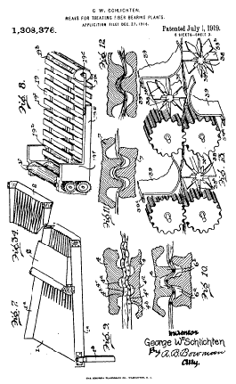
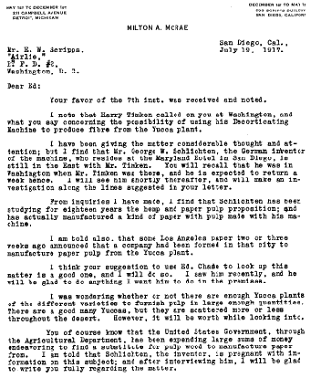
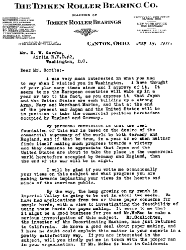
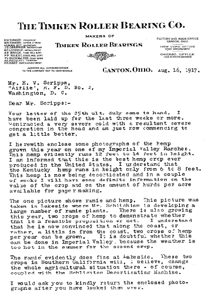
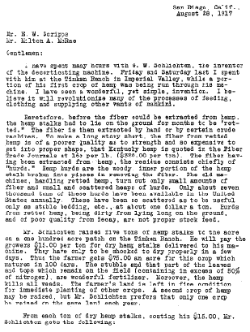
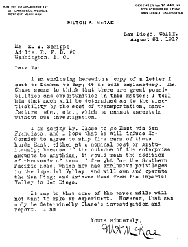
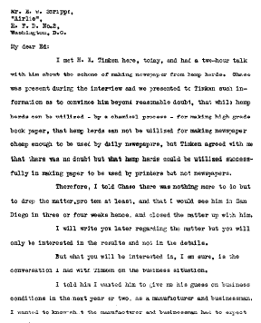
the authorized on-line version of Jack Herer’s “The Emperor Wears No Clothes”
| previous page | Appendix | next page |
|
 |
 |
 |
 |